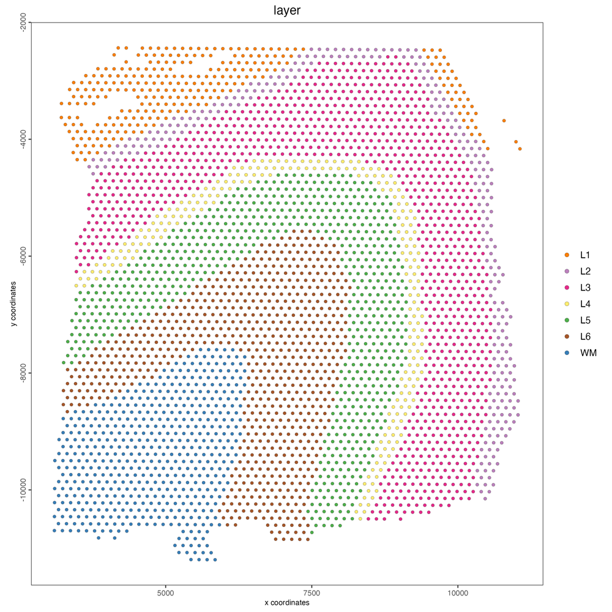
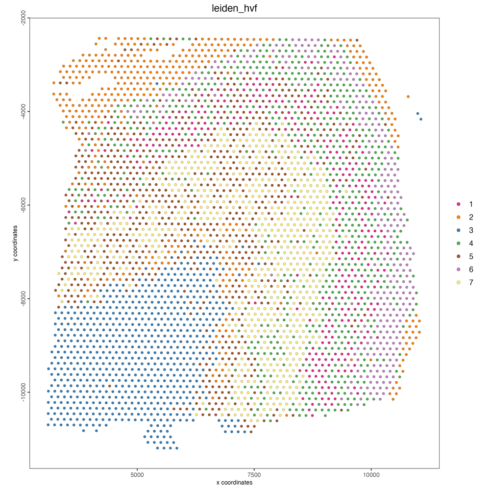
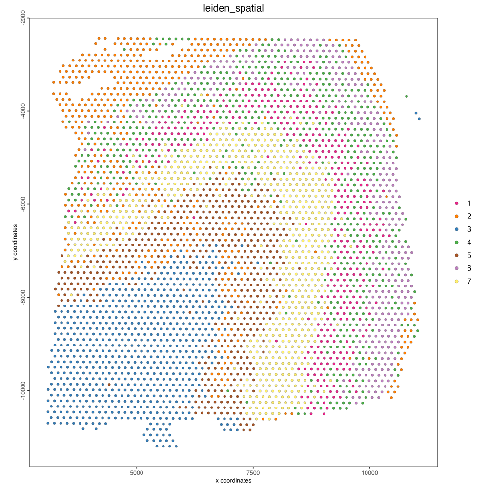
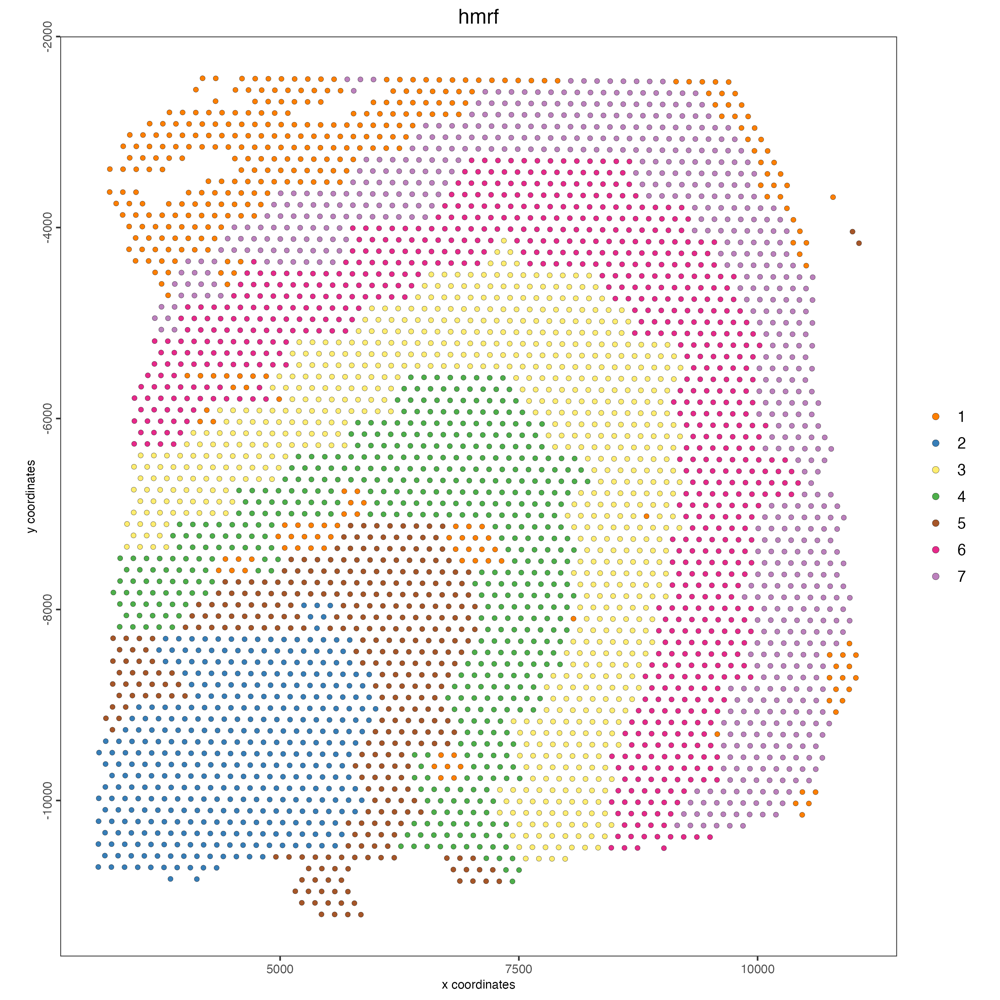
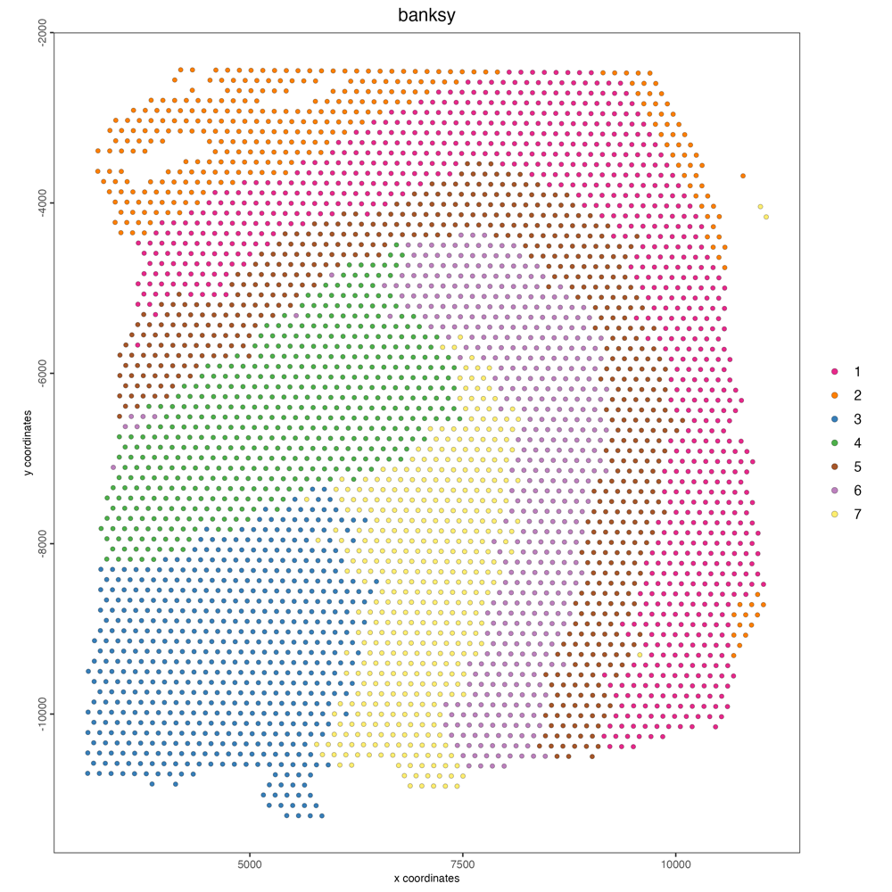
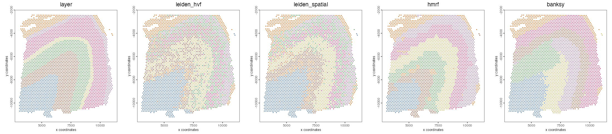

Spatial domains are regions of tissue with a shared expression
profile. findSpatialDomains() finds them with two native
methods:
-
"neighborhood": the BANKSY embedding (Singhal et al. 2024), each spot’s expression together with its neighbours’ mean and gradient, clustered with Leiden; -
"hmrf": the hidden Markov random field (Zhu et al. 2018), a Gaussian mixture with a prior that neighbouring spots share a domain.
This tutorial runs them on the human dorsolateral prefrontal cortex (DLPFC) slice 151673 (Visium, Maynard et al. 2021) and compares them with its manual annotation of the six cortical layers and the white matter. It builds up in four steps, to show what each spatial ingredient adds:
- the standard clustering workflow, which does not use space;
- the same workflow on spatially variable genes;
- HMRF, which adds a spatial prior;
- BANKSY, which adds each spot’s neighbourhood to its expression.
1 Download the data
The counts come from the spatialLIBD bucket; the spot positions, image and layer annotation from the HumanPilot repository.
# Install Giotto Suite once (see the Installation page)
install.packages("GiottoUtils",
repos = c("https://giotto-suite.r-universe.dev", "https://cloud.r-project.org"))
GiottoUtils::suite_install(ref = "disk_full", install_arrow = TRUE)
library(Giotto)
data_dir <- file.path(tempdir(), "dlpfc_151673")
dir.create(file.path(data_dir, "spatial"), recursive = TRUE,
showWarnings = FALSE)
libd <- "https://raw.githubusercontent.com/LieberInstitute/HumanPilot/master/10X"
files <- c(
"151673_filtered_feature_bc_matrix.h5" = "https://spatial-dlpfc.s3.us-east-2.amazonaws.com/h5/151673_filtered_feature_bc_matrix.h5",
"spatial/tissue_positions_list.csv" = file.path(libd, "151673/tissue_positions_list.txt"),
"spatial/scalefactors_json.json" = file.path(libd, "151673/scalefactors_json.json"),
"spatial/tissue_lowres_image.png" = file.path(libd, "151673/tissue_lowres_image.png"),
"layers.tsv" = file.path(libd, "barcode_level_layer_map.tsv"))
for (f in names(files)) {
dest <- file.path(data_dir, f)
if (!file.exists(dest)) download.file(files[[f]], dest, mode = "wb")
}2 Create and process the object
g <- createGiottoVisiumObject(expr_data = "filter",
h5_visium_path = file.path(data_dir, "151673_filtered_feature_bc_matrix.h5"),
h5_tissue_positions_path = file.path(data_dir, "spatial/tissue_positions_list.csv"),
h5_image_png_path = file.path(data_dir, "spatial/tissue_lowres_image.png"),
h5_json_scalefactors_path = file.path(data_dir, "spatial/scalefactors_json.json"))
# keep the annotated spots and add their layer
layers <- data.table::fread(file.path(data_dir, "layers.tsv"), header = FALSE,
col.names = c("cell_ID", "sample", "layer"))[sample == 151673]
g <- subsetGiotto(g, cell_ids = intersect(spatIDs(g), layers$cell_ID))
g <- addCellMetadata(g, new_metadata = layers[, c("cell_ID", "layer")],
by_column = TRUE, column_cell_ID = "cell_ID")
g <- filterGiotto(g, expression_threshold = 1, feat_det_in_min_cells = 10,
min_det_feats_per_cell = 100)
g <- normalizeGiotto(g) # log-normalized values
g <- createSpatialNetwork(g, method = "Delaunay")
spatPlot2D(g, cell_color = "layer", point_size = 1.5)
3 Clustering without space
The standard workflow clusters the spots on their expression alone: the most variable genes, PCA, a shared nearest neighbour network and Leiden.
g <- calculateHVF(g, method = "var", n_top_feats = 2000)
g <- runPCA(g, feats_to_use = "hvf", ncp = 30)
g <- createNearestNetwork(g, dimensions_to_use = 1:30, k = 30)
g <- doLeidenCluster(g, resolution = 0.7, name = "leiden_hvf")
spatPlot2D(g, cell_color = "leiden_hvf", point_size = 1.5)
The white matter and the outer layer are found, but the inner layers
mix. method = "var" ranks genes by variance; the default
calculateHVF() method picks genes that separate these
layers poorly (ARI 0.15 on three slices, against 0.32).
4 Clustering on spatially variable genes
The same workflow on the 1,000 most spatially variable genes. The clustering still ignores where the spots are, but the genes now carry the layer structure. HMRF below starts from the same genes.
# any spatialAutoCor() method works, for example Moran's I or Geary's C
sv <- spatialAutoCor(g, method = "binspect", return_gobject = FALSE)
spatial_genes <- head(sv$feats, 1000)
g <- runPCA(g, feats_to_use = spatial_genes, ncp = 30, name = "pca_spatial")
g <- createNearestNetwork(g, dim_reduction_name = "pca_spatial",
dimensions_to_use = 1:30, k = 30, name = "sNN_spatial")
g <- doLeidenCluster(g, network_name = "sNN_spatial", resolution = 0.65,
name = "leiden_spatial")
spatPlot2D(g, cell_color = "leiden_spatial", point_size = 1.5)
The layers appear as bands, but with ragged borders and spots of one layer scattered in the next.
5 HMRF
HMRF clusters the spots with a Gaussian mixture and a prior that
neighbouring spots share a domain, set by beta. It runs on
a few values per spot: here NMF factors of the same spatially variable
genes. Few inputs make its k-means start fast and stable, and each step
is a separate function, so any dimension reduction can be used.
# NMF factors of the spatially variable genes, stored as the dimension
# reduction "spatial_nmf"; NMF starts from random values, so set its seed
g <- runNMF(g, feats_to_use = spatial_genes, k = 10, seed_number = 1234,
name = "spatial_nmf")
# HMRF on the factors
g <- findSpatialDomains(g, method = "hmrf", dim_reduction_to_use = "nmf",
dim_reduction_name = "spatial_nmf", k = 7, beta = 5, name = "hmrf")
spatPlot2D(g, cell_color = "hmrf", point_size = 1.5)
6 BANKSY
BANKSY adds to each spot the weighted mean expression of its
neighbours, weighted by lambda, runs PCA, and clusters the
spots with Leiden. This follows the BANKSY paper’s settings for DLPFC:
values normalized to the median library size without log (BANKSY works
best on other values than the steps above; see normalization and features), the 2,000
most variable genes, lambda 0.2 and the 18 nearest spots
(the first two rings of the Visium grid).
g <- processExpression(g, normParam("library", scalefactor = "median"),
name = "medlib")
g <- calculateHVF(g, expression_values = "medlib", method = "var",
n_top_feats = 2000, HVFname = "hvf_medlib")
g <- createSpatialNetwork(g, method = "kNN", k = 18, name = "kNN18")
g <- findSpatialDomains(g, method = "neighborhood",
expression_values = "medlib", feats_to_use = "hvf_medlib",
lambda = 0.2, npcs = 20, k_neighbors = 50,
spatial_network_name = "kNN18", resolution = 0.5, name = "banksy")
spatPlot2D(g, cell_color = "banksy", point_size = 1.5)
resolution = 0.5 is the smallest resolution that gives 7
domains on this slice, as are 0.7 and 0.65 for the two Leiden steps
above; with other data, choose it for the number of domains you
expect.
7 Compare with the layers
meta <- pDataDT(g)
domains <- c("leiden_hvf", "leiden_spatial", "hmrf", "banksy")
sapply(domains, function(d) mclust::adjustedRandIndex(meta[[d]], meta$layer)) leiden_hvf leiden_spatial hmrf banksy
0.30 0.41 0.53 0.53
The adjusted Rand index (ARI) measures agreement with the manual annotation. Spatially variable genes improve clustering without space, and the spatial models then recover the layers as stacked bands. HMRF and BANKSY do so to the same degree and agree with each other (ARI 0.56). On three DLPFC slices (151507, 151673, 151674) the mean ARI was:
| mean ARI | |
|---|---|
| Leiden on highly variable genes | 0.32 |
| Leiden on spatially variable genes | 0.39 |
| HMRF | 0.52 |
| BANKSY | 0.53 |
Each step took a few seconds on this slice: about 5 s for the spatially variable genes, 2 s for NMF and HMRF, 1 s for BANKSY.
Choosing the HMRF settings
runHMRF() fits several k and
beta in one call and hmrfSummary() compares
them: coherence is the share of neighbouring spots in the
same domain, and smallest_domain near 0 means
k is too large.
g <- runHMRF(g, dim_reduction_to_use = "nmf",
dim_reduction_name = "spatial_nmf", k = 7, betas = c(0, 2, 5, 10))
hmrfSummary(g) setting k beta loglik confidence coherence smallest_domain
1: hmrf_k7_b0 7 0 -183715.27 0.919 0.710 0.092
2: hmrf_k7_b2 7 2 -154455.80 0.984 0.901 0.101
3: hmrf_k7_b5 7 5 -108236.28 0.990 0.922 0.094
4: hmrf_k7_b10 7 10 -30957.56 0.991 0.925 0.096Each setting is stored as a cell metadata column
(hmrf_k7_b5, …) and its domain probabilities as a spatial
enrichment of the same name.
The input matters more than beta. On three DLPFC slices
(151507, 151673, 151674) the mean ARI was:
| HMRF input | mean ARI |
|---|---|
| 10 NMF factors of 1,000 spatial genes | 0.52 |
20 PCs of 1,000 spatial genes, scaled
(zscore = "feature") |
0.51 |
| expression of 100-300 spatial genes | 0.28-0.36 |
HMRF also runs on any spatial enrichment
(spat_enr_name), for example the scores of spatial co-expression
modules. How the spatial genes are picked (binSpect, Moran’s I or
Geary’s C; 500 to 2,000 genes) changed the mean ARI by about 0.03. NMF
factors are used as given (zscore = "none", the default for
a dimension reduction); PCs work better scaled, so that the first PCs do
not dominate. More domains than layers (k = 8 or
9) split layers into patches rather than sharpen their
borders (mean ARI 0.49 and 0.47).
Choosing the BANKSY settings
lambda weights the neighbourhood: near 0 the domains
follow cell types, near 1 they follow the neighbourhood.
resolution sets the number of domains; the BANKSY paper
tried resolutions from 0.1 to 1.5 and kept those giving the annotated
number of layers. findSpatialDomains() passes other
arguments to runNeighborhoodPCA(), for example
npcs or compute_agf = TRUE for BANKSY’s
gradient features (off by default, as in the paper). The embedding is
also available on its own with runNeighborhoodPCA(), to
cluster it differently.
Normalization and features
The normalization and features matter more than the methods’ settings. On the three slices:
| mean ARI | |
|---|---|
| BANKSY, median library size, highest-variance genes (above) | 0.53 |
BANKSY, median library size, Seurat’s vst genes (as in
the paper) |
0.56 |
BANKSY, log-normalized values, Seurat’s vst genes |
0.52 |
BANKSY, median library size,
calculateHVF(method = "cov_loess") genes |
0.14 |
BANKSY, log values, lambda 0.8 with gradient
features |
0.46 |
| HMRF, log-normalized values (above) | 0.52 |
| HMRF, median library size without log | 0.38 |
normParam() steps can be chained in
processExpression() for other normalizations, for example
list(normParam("library", scalefactor = "median"), normParam("log")).
8 Citation
If you use these methods, please cite the original papers:
- Singhal V, Chou N, Lee J, et al. BANKSY unifies cell typing and tissue domain segmentation for scalable spatial omics data analysis. Nature Genetics 56, 431–441 (2024). https://doi.org/10.1038/s41588-024-01664-3
- Zhu Q, Shah S, Dries R, Cai L, Yuan GC. Identification of spatially associated subpopulations by combining scRNAseq and sequential fluorescence in situ hybridization data. Nature Biotechnology 36, 1183–1190 (2018). https://doi.org/10.1038/nbt.4260
- Maynard KR, Collado-Torres L, Weber LM, et al. Transcriptome-scale spatial gene expression in the human dorsolateral prefrontal cortex. Nature Neuroscience 24, 425–436 (2021). https://doi.org/10.1038/s41593-020-00787-0